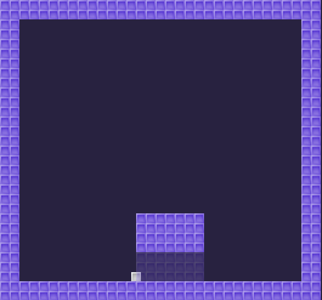

Godot's Dynamic TileMap Layers demo, retitled. A tech demo: per-tile runtime collision removal, not a game.
OBSERVED INFERRED MISSING
No gate signed. No human playtest. → GDD.md

Upstream screenshot, 530×495 (godot/README.md:20). Design art, not a Walker capture. The rendered fade is unverified.
OBSERVED _tile_data_runtime_update sets the polygon count to 0 on every Secret cell. The Ground layer, which shares the TileSet, stays solid.
INFERRED Godot 4.3+ offers a simpler checkbox (godot/README.md:7-10).
11 headless checks: walks through to x = 310.4, fades to 0.3, restores to 1.0, ground still solid, W jumps. The rendered fade and controller input are not verified.
Q-01 Demo, or seed of a secret-finding platformer?
Q-04 Fix the stale description?
Q-02, Q-03, Q-05 in decisions.md
A secret with nothing behind it is a trick, not a discovery. Fine for a demo. Fatal for a game.